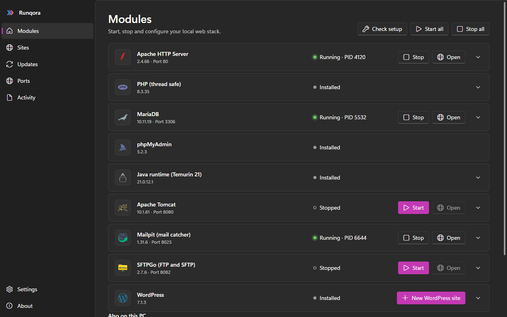
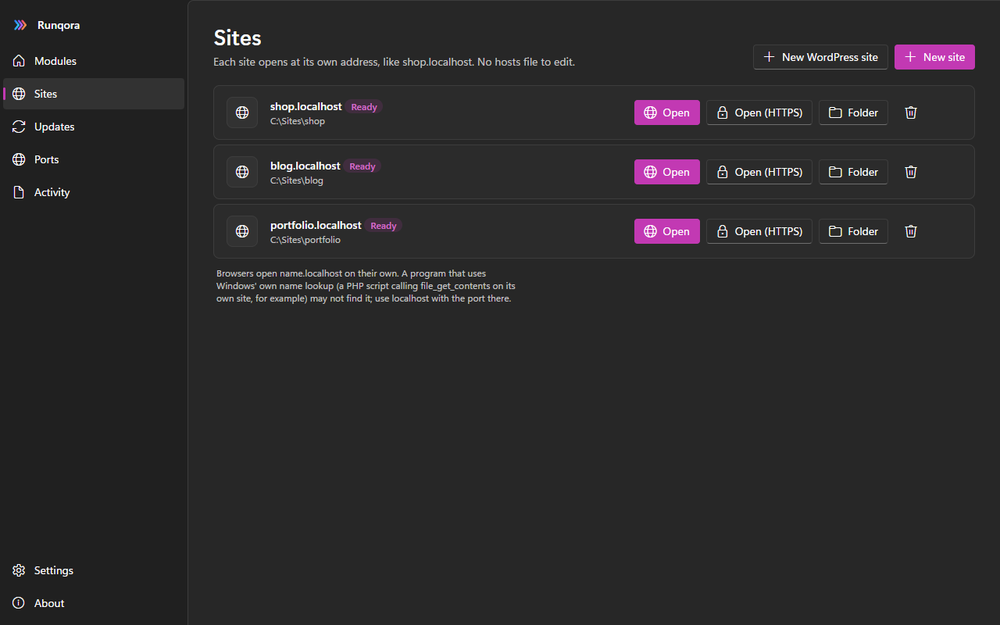
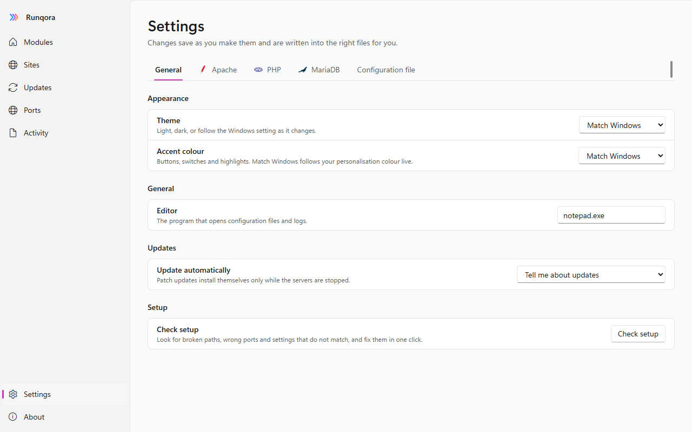

Your local web stack, in one window.
Install and run Apache, PHP, MariaDB, phpMyAdmin and more on Windows. Sites at name.localhost, local HTTPS, one-click WordPress and safe updates.
Windows 10 or 11, 64-bit · installs for your account only, no administrator rights · free and open source

Everything a local server needs
The pieces you would otherwise download, unpack, edit and keep up to date by hand.
One-click stack
Apache, PHP, MariaDB and phpMyAdmin download from their publishers and are checked against the published checksum before anything is unpacked.
Sites without hosts files
Point any folder at shop.localhost. Runqora writes the virtual host and the certificate name for you.
One-click WordPress
Copies WordPress, creates its database and writes wp-config.php. You finish in the browser.
Local HTTPS
A private certificate authority for your own sites. Trusting it is a button you press, with Windows asking first.
Settings, not config files
PHP limits and extensions, MariaDB tuning, ports and folders as forms. Export and import everything as a runqora.ini.
Port conflicts fixed
See which program holds a port, then end it, stop its service or move to a free port in one click.
Updates for everything
Every module is checked against its publisher, and Runqora updates itself from new releases here. Minor and major upgrades show warnings first and roll back.
More servers
Tomcat with Java, Mailpit, SFTPGo, Node.js, Composer and Adminer, plus control of FileZilla Server or Mercury if you already have them.
Windows 11 design
Mica, light and dark themes that follow Windows, your accent colour, a tray icon and a layout that fits any window size.
A real command line
rq start, rq sites add, rq doctor --fix: everything the window does, scriptable.


Install in a minute
The installer puts Runqora in your user profile. Your servers and databases live in their own folder and stay put if you uninstall.
- Download the installer
Runqora-Setup-x64.exefrom the button above. - Run itWindows may show a SmartScreen notice because the installer is not code-signed yet: choose More info, then Run anyway.
- Open Runqora and press Installon Apache, PHP, MariaDB and phpMyAdmin, then Start all.